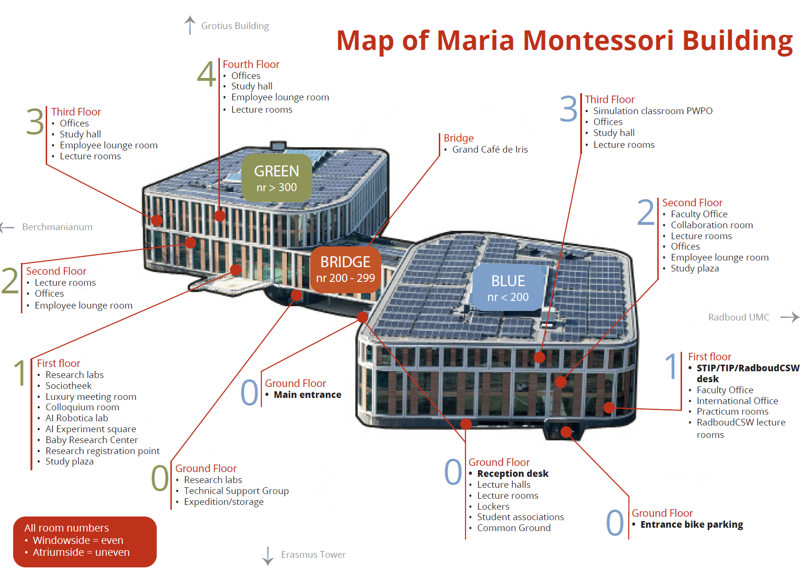

Practical
Route
Plan your route here. Select the Maria Montessori Building as your destination.
Train:
- Nijmegen, station Heyendaal (10 minutes walk from here)
- Nijmegen, Central Station –> Bus line 10, stop Nijmegen, Erasmusgebouw (4 minutes walk from here)
Location
You will find the Maria Montessori Building here:
Rooms

Figure 1: plan Maria Montessorigebouw
Hotels
Van Peltlaan 4, Nijmegen
Distance 1.5km, 11 minutes
Oranjesingel 2C Distance 3.5km, 28 minutes Bus 6, 10 of 14
Oranjesingel 66, Nijmegen
Distance 1.7km 23 minutes
Bus 58
Nassausingel 3, Nijmegen
Distance 3.3km, 15 minutes
Bus 10
Stationsplein 29, Nijmegen
Distance 3.5km, 11 minutes
Bus 6, 9 of 10
Weg door het Jonkerbos 90
Distance 4.1km, 23-26 minutes
Bus 12 of 15
Oude Holleweg 5, Berg en Dal
Distance 6.2km, 10 minutes by car
Zevenheuvelenweg 48A, Berg en Dal Distance 7.2km, 13 minutes by car
Hertog Eduardplein 4, Lent
Distance 5.7km, 32 minutes
Bus 15
: 0625771448